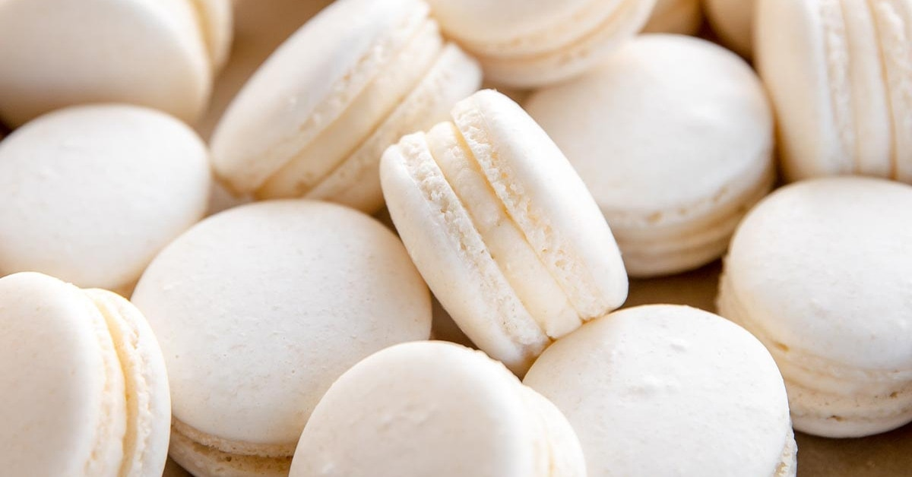
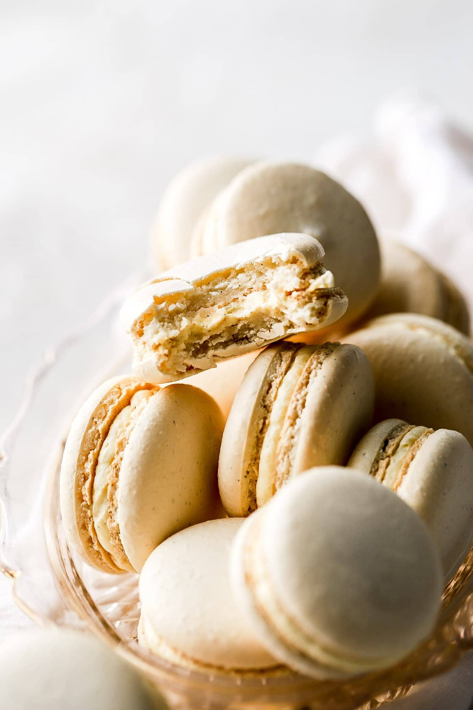
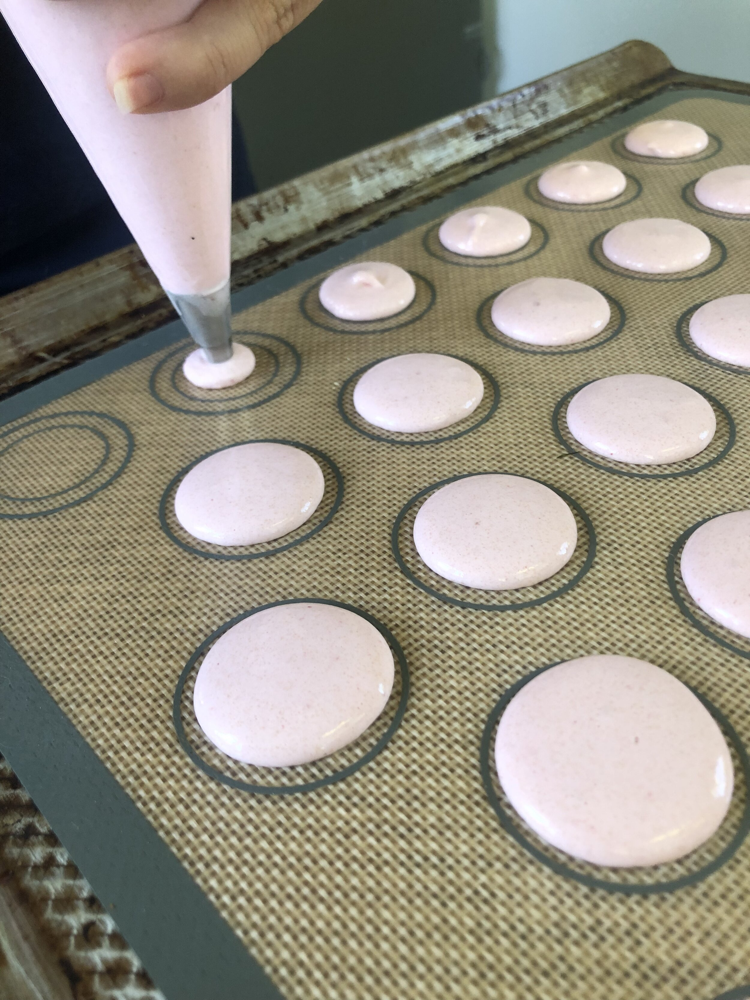
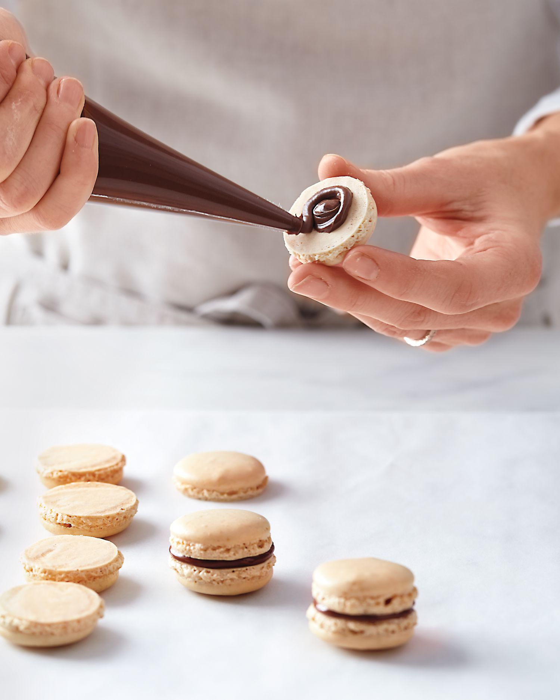
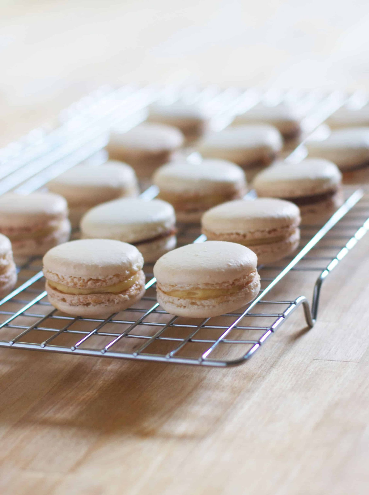

Healthy Homemade French Macarons

Ingredients
- 210g Evaporated Cane Juice
- 120g Almond Meal
- 100g Egg Whites
- ¼ tsp Salt
- 50g Evaporated Cane Juice
- ½ tsp Vanilla Extract
Instructions
- Line 3 cookie sheets with silicone baking mats or parchment paper. Prepare a piping bag with round tip (#804).
- In a small bowl, add the powdered evaporated cane juice and sifted almond meal. Set aside.
- In an electric stand mixer bowl fitted with a whisk attachment, add the egg whites and salt. Turn the stand mixer on high speed and start a timer. Slowly sprinkle in the 50g of evaporated cane juice. Whip this mixture for 6 minutes. Mixture should form stiff peaks.
- Add the vanilla extract and whip for 1 more minute. Dump the set aside evaporated cane juice/almond meal mixture into the stand mixer and fold by hand with a silicone spatula until fully incorporated. Do not under mix and do not over mix. Mixture should be in between “plopping” off the spatula and “flowing” like a thick ribbon.
- Scoop the batter into the prepared piping bag and pipe 1” buttons onto the prepared cookie sheets, each about 2” apart. Tap the pans on the counter HARD a few times to deflate any air pockets. Preheat the oven to 350 degrees Fahrenheit. Let the piped macarons sit at room temperature for ~1 hour. Shells should form on the surface of the macarons (when you can tap the surface, they shouldn’t stick to your finger at all).
- Bake one tray at a time for ~8-10 minutes, or until the fluffy “feet” form and the surfaces of the macarons turn a very light golden brown. Let cool completely on the cookie sheets.
- Pipe your frosting of choice onto half of the macaron shells, then sandwich the remaining shells on top. Serve immediately.



